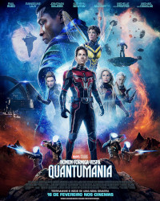
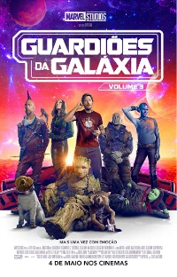

-
Mario Bros. O filme 2023
- Resumo!
Mario é um encanador junto com seu irmão Luigi. Um dia, eles vão parar no reino dos cogumelos, governado pela Princesa Peach, mas ameaçado pelo rei dos Koopas, que faz de tudo para conseguir reinar em todos os lugares.
-
O Exorcista do Papa 2023
- Resumo!
O Exorcista do Papa conta a história do padre Gabriele Amorth, Exorcista Chefe do Vaticano, que é designado para investigar a possessão de um jovem garoto, chamado Henry, que foi possuído em solo sagrado. Essa possessão é a responsável por revelar uma conspiração centenária que o Vaticano estava escondendo.
-
Homem-Formiga e a Vespa: Quantumania 2023
- Resumo!
Após um contato não muito bem planejado, Scott Lang e Hope van Dyne são puxados para o Reino Quântico. Além deles, Hank Pym, Janet van Dyne e Cassie Lang respectivamente pais de Hope e filha de Scott também são levadas para o desconhecido ambiente. Por lá, os heróis vão viver uma nova aventura e precisarão confrontar Kang, O Conquistador.
-
BHOLAA 2023
- Resumo!
Após passar 10 anos preso, Bholaa deseja voltar para casa para conhecer a filha. Entretanto, sua jornada não é tão simples e ele se vê obrigado a encarar obstáculos surreais, com a morte à espreita em todos os cantos.
-
Astérix e Obélix: O Império do Meio 2023

- Resumo!
Os heróis Asterix e Obelix vão até a China para ajudar a princesa So Hi a salvar a Imperatriz e suas terras de um abominável príncipe.
-
Guardiões da Galáxia Vol. 3 2023
- Resumo!
Peter Quill deve reunir sua equipe para defender o universo e proteger um dos seus. Se a missão não for totalmente bem-sucedida, isso pode levar ao fim dos Guardiões.